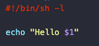

Docker actions don't run directly on the virtual machine in the GitHub Action runner, but rather in the container defined by the Docker build. It will be slower, but allows us to use tools that are otherwise not available in the GitHub servers.
The basic directory organization is the same. Create a sub-directory in the .github/actions directory, and place the action.yml file in there. We also need to add in this directory all other files needed for the action (e.g. Dockerfile, executable files, etc).
The action.yml file follows the same structure as before, but the using key needs to be set to docker, and instead of main we need to supply an image. This can be either an image from DockerHub, or one that we create ourselves.
The Dockerfile needs to be placed inside the action directory. When using Docker actions, we need to define the inputs in the inputs object, but also pass them to the args array. This way, arguments will be supplied to the entrypoint.
Dockerfiles in Github actions do have certain limitations. You can check them here.

To set environment variables when creating actions in Docker containers we use the syntax
as part of the run keyword in our job's step.